Reproducible Data Analysis Day 2: Introduction to Git/GitHub
Learning Objectives
By the end of this class, you should
- Have a conceptual understanding of what version control is and why it is important
- be able to describe the differences and relationships between Git, GitHub, and Git Client
- Have some familiarity with the GitHub browser interface and be able to use some of its basic features such as navigating the contents of a repository and creating issues
- Have your environment set up for using Git and GitHub
- Have practical experience with the routine Git workflow: Create, Clone, Stage, Commit, Push, and Pull
- Learn the key steps for submission of assignments in this course
Part 1: What is Version Control? Git? GitHub? Git Client?
All these terms might seem a little daunting at first, but don’t worry, all these things were invented to make things easier for you. There is a bit of a learning curve if you have no previous experience, but rest assured, this class has been carefully designed to walk you through everything you need to know.
Git Basics
Version control is one of the key tools in the software engineer’s toolbox. According to The Guardian, >900 developers contributed to the development of Microsoft’s Windows 7. When you have that many people working on a single project, imagine how many times the code base would be changed within a single day, or even a single hour? And by who? And for what? What happens if more than two developers change a single file at the same time? Or even a single line of code?
A version control system provides a structured way for maintaining a clean and easily accessible track record of how a directory of files (most commonly the source code of some software application) evolves through time. It also provides important mechanisms for resolving issues when they arise, such as when two developers try to make conflicting changes to a single file.
Git is just one of many version control systems out there, albeit a (very) popular one. Others include Mercurial, Perforce, Subversion, etc.
Watch this video for some Git Basics.
Why Git? (excerpt from section 1.1 of Happy Git and GitHub for the useR)
Git is a version control system. Its original purpose was to help groups of developers work collaboratively on big software projects. Git manages the evolution of a set of files – called a repository – in a sane, highly structured way. If you have no idea what I’m talking about, think of it as the “Track Changes” features from Microsoft Word on steroids.
Git has been re-purposed by the data science community. In addition to using it for source code, we use it to manage the motley collection of files that make up typical data analytical projects, which often consist of data, figures, reports, and, yes, source code.
Why GitHub? (excerpt from section 1.2 of Happy Git and GitHub for the useR)
This is where hosting services like GitHub, Bitbucket, and GitLab come in. They provide a home for your Git-based projects on the internet. If you have no idea what I’m talking about, think of it as DropBox but much, much better. The remote host acts as a distribution channel or clearinghouse for your Git-managed project. It allows other people to see your stuff, sync up with you, and perhaps even make changes. These hosting providers improve upon traditional Unix Git servers with well-designed web-based interfaces.
But be careful, while GitHub and many other services are great for tracking files, they may not always have the capacity to store large amounts of data. GitHub recommends that repositories are under the size of 1GB (see this github help page). More importantly, GitHub doesn’t allow for files larger than 100MB in size (see Working with large files).
Even for private solo projects, it’s a good idea to push your work to a remote location for peace of mind. Why? Because it’s fairly easy to screw up your local Git repository, especially when you’re new at this. The good news is that often only the Git infrastructure is backed up. Your files are just fine! Which makes your Git pickle all the more frustrating. There are official Git solutions to these problems, but they might require expertise and patience you can’t access at 3a.m. If you’ve recently pushed your work to GitHub, it’s easy to grab a fresh copy, patch things up with the changes that only exist locally, and get on with your life.
We target GitHub – not Bitbucket or GitLab – for the sake of specificity. However, all the big-picture principles and even some mechanics will carry over to these alternative hosting platforms.
Wait, so what is what, exactly?
Version control is the general term used to refer to software systems that helps you “manage” your files, most commonly being code bases. As already mentioned, Git is just one of many version control systems out there. Other examples include Mercurial, Perforce, Subversion, etc.
Git is the version control software. Both the GitHub server and your computer run it. It is what enables your laptop to talk with the remote repository stored on GitHub, and enables version control features like pushing and pulling code changes, keeping history, etc.
GitHub is the service in the cloud that stores your remote repository. When you’re working in a group, you and your collaborators will independently interact with GitHub in order to pull/publish your latest code changes. It will hold the most up-to-date “truth” of your project directory with each of you working away on your local machines.
Git Client is a piece of software that provides a graphical user interface that facilitates your interaction with Git. In our case, we will be using RStudio’s built-in Git Client. Other options include SourceTree and GitHub Desktop. And of course, the terminal is the most powerful (but also the most difficult if you’re not used to command line interfaces) way to use Git.
Part 2: Set up your environment
Before we can start using Git, your computer must be equipped with the appropriate software. In this section, we will walk you through: 1. Installing Git, 2. Registering for a GitHub account, 3. Setting up an SSH key, 4. Talking to Git via RStudio.
1. Install Git (contains excerpts from Ch. 6 of Happy Git and GitHub for the useR)
You need Git, so you can use it at the command line and so RStudio can call it. If there’s any chance it’s installed already, verify that, rejoice, and skip this step. Otherwise, find installation instructions below for your operating system.
Is Git already installed?
Open the shell (terminal / command line). Type in git --version, no quotation, press enter.
git --version
## git version 2.39.2If you see something like git: command not found, proceed to the instructions for installation based on your operating system.
If you see a printout of the version number as shown above, this means you have Git already. Great! But wait. Is the version number < 2.28? If so, I recommend that you update it (follow the install instructions based on your operating system below). The reason you should update if you have an older version of Git is that newer versions allow us to configure the default branch name. There is a movement in the Git community to rename the default branch of repositories from ‘master’ in favor of the neutral and inclusive term ‘main’, as ‘master’ has offensive connotations. GitHub has made the change to default new branch names as main. With older versions of git, the default branch will always be ‘master’, so each time you create a new repo you’ll have to rename the local default branch to avoid conflicts with the GitHub default. With a newer version (2.28 and later) you can set it once and you’re good to go for all new repos.
Otherwise, if you have a current version of Git installed, you can skip the next step!
Install Git for Windows people
Install Git for Windows, previously known as msysgit or “Git Bash”, to get Git in addition to some other useful tools, such as the Bash shell. Yes, all those names are totally confusing. You may accept all the default settings during installation.
- This approach leaves the Git executable in a conventional location, which will help you and other programs, e.g. RStudio, find it and use it. This also supports a transition to more expert use, because the Bash shell will be useful as you venture outside of R/RStudio.
- This also leaves you with a Git client, though not a very good one.
- RStudio for windows likes for git to be in the Files(x86) folder. If not in this location, RStudio may not detect it, and may cause headaches for you later.
Install Git for Mac people
First install the Xcode command line tools (not all of Xcode), which includes Git by opening a terminal and typing in the following and press enter. Follow prompts.
xcode-select --installVerify that Xcode command line tools has been installed by typing the following into the terminal and press enter.
xcode-select --version
## xcode-select version 2384.Enter one of these commands to elicit an offer to install developer command line tools:
git --version
git configAccept the offer! Click on “Install”.
If the Xcode method isn’t successful for you, you can install git from here: http://git-scm.com/downloads. Or you can try this command if you use Homebrew:
brew install gitVerify that you’re ready to go by running the git --version command once again.
Additionally if you’ve updated your git version, save yourself some potential headache and make sure that RStudio is pointing to the correct version of git.
Install Git for Linux people
Install Git via your distro’s package manager.
Ubuntu or Debian Linux:
sudo apt-get install gitFedora or RedHat Linux:
sudo yum install gitA comprehensive list for various Linux and Unix package managers.
2. Register for a GitHub account (contains excerpts from Ch. 6 of Happy Git and GitHub for the useR)
If you don’t have a GitHub account already, register for one at GitHub. It’s free!
A few tips on selecting a username, which sadly tend to contradict each other:
- Incorporate your actual name! People like to know who they’re dealing with. Also makes your username easier for people to guess or remember.
- Reuse your username from other contexts, e.g., Twitter or Slack if it’s available.
- Pick a username you will be comfortable revealing to your future boss.
- Shorter is better than longer.
- Be as unique as possible in as few characters as possible. In some settings GitHub auto-completes or suggests usernames.
- Make it timeless. Don’t highlight your current university, employer, or place of residence.
- Avoid words laden with special meaning in programming. In my first inept efforts to script around the GitHub API, I assigned lots of issues to the guy with username NA because my vector of GitHub usernames contained missing values. A variant of Little Bobby Tables.
You can change your username later, but better to get this right the first time.
3. Introduce yourself to Git (contains excerpts from Ch 7 of Happy Git and GitHub for the useR)
First, you want to introduce yourself to Git. The information you enter here will constitute the user stamp for each commit you make. That way, Git can trace back code changes to their authors. This only needs to be done once.
In the shell/terminal:
git config --global user.name 'your_github_username'
git config --global user.email 'your_email_adress'
git config --global --listsubstituting your github username and the email associated with your GitHub account.
4. Authenticate with SSH (contains excerpts from Ch 10 of Happy Git and GitHub for the useR)
When we interact with a remote Git server, such as GitHub, we have to include credentials in the request. This proves we are a specific GitHub user, who’s allowed to do whatever we’re asking to do.
Git can communicate with a remote server using one of two protocols, HTTPS or SSH, and the different protocols use different credentials.
Here we describe the credential setup for the HTTPS protocol, which is what we recommend if you have no burning reason to pick SSH (if so, head to Ch 10 of Happy Git and GitHub for the useR). With HTTPS, we will use a personal access token (PAT).
Let it be known that the password that you use to login to GitHub’s website is NOT an acceptable credential when talking to GitHub as a Git server. This was possible in the past (and may yet be true for other Git servers), but those days are over at GitHub. You can learn more in their blog post Token authentication requirements for Git operations.
Here’s the error you’ll see if you try to do that now:
remote: Support for password authentication was removed on August 13, 2021. Please use a personal access token instead.
remote: Please see https://github.blog/2020-12-15-token-authentication-requirements-for-git-operations/ for more information.
fatal: Authentication failed for 'https://github.com/OWNER/REPO.git/'This is a very minimal account of getting and storing a PAT. This might be all you need when you’re first getting yourself set up. If you run into trouble, ask the instructor, and refer to the detailed description in Ch 9 of Happy Git and GitHub for the useR.
Go to https://github.com/settings/tokens and click “Generate token” (or use usethis::create_github_token() from R).
Look over the scopes; I highly recommend selecting “repo”, “user”, and “workflow”.
Click “Generate token”.
Copy the generated PAT to your clipboard. Leave that browser window open and available for a little while, so you can come back to copy the PAT. Once you close the window, you won’t be able to see the PAT (but you can generate a new one). You’ll want to store the PAT securely, like in a password manager (NOT in a repo that gets pushed to GitHub!!) so you can reuse it until it expires.
Next, you need to save your PAT to a secure place on your computer and configure git to use this for authentication. We will do this in R.
First, install the “gitcreds” R package with install.packages("gitcreds"). Next, run gitcreds::gitcreds_set() and enter your PAT when prompted. That’s it - now you should be able to communicate with GitHub without providing your password (or token) every time.
Set the default branch name to main
Finally, we’ll set the global option for all new repositories to use a default branch name of main.
git config --global init.defaultBranch mainIf this command is successful, great! Move on to Part 3.
Note that this command will only work for Git versions 2.28 and higher, so if your version is older, you’ll have to rename the default branch each time you create a new repo. Here’s how to do that.
Option 1: You can do this on the command line (from within the new repo):
git branch -M mainOption 2: In an RStudio project for the new repo, run the following line of R code, which uses the usethis package:
# install usethis first if it's not already installed
install.packages("usethis")
# rename default branch from master to main
usethis::git_default_branch_rename(to = "main")Part 3: Create, Clone, Stage, Commit, Push, Pull!
Now, we’re ready to start using Git.
The six verbs in the title will likely encompass 90% of everything you will do with Git. We will now walk through each one to give a brief explanation and demo.
Note that everything that can be done using RStudio (or any other Git Client), can also be done via the shell. Here we provide instructions for RStudio environment for a more guided experience.
If you’re interested, check out these workshop materials from Software Carpentry on using Git in the shell. It is definitely a worthwhile learning experience if you want to dive deeper into the Git world.
Overview
A repository is simply a directory for your project. It is no different from any other directories on your laptop, except that Git knows about it and keeps a complete historical record of every change that has been “committed”.
When a repository is stored on GitHub, it is called the “remote” repository. You can then “clone” this repository onto your laptop. The copy on your laptop is then called the “local” repository. “Pushing” and “pulling” are operations for keeping the local and remote repositories in sync with each other.
For example, You can modify codes in your “local” repository and then, when ready, “push” your changes to the “remote” repository on GitHub. Your group members can then “pull” the most up-to-date version of the “remote” repository from GitHub into their “local” repositories and continue to work on the project.
Don’t worry if you don’t understand every detail of the workflow just yet. Just get the overall picture for now. You’ll gain a much deeper understanding once we start trying things out for real, starting now!
We are going to start by creating a brand new repository for this class. We will use this repository to illustrate how to start an assignment for this course. To complete the deliverable for this class, follow these steps to push new files to this repository.
Create a new assignment repository
Here we are going to create a new assignment repository. To start a new assignment, you’ll need an assignment invite link, which will be provided on Moodle.
Log into Moodle and navigate to our course page. Under the main “Course” tab, click on “Day 2: Git and GitHub”.
Click on the link that says “First repo”.
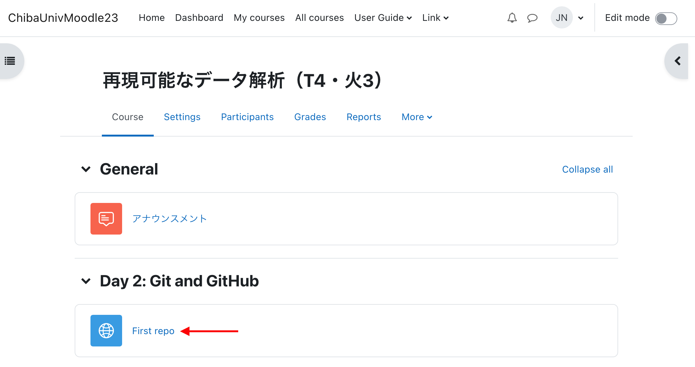
You’ll be prompted to login to GitHub if you’re not already logged in. If this is your first assignment for the class, you’ll first be asked to link your GitHub ID to your name in the class roster. Once that’s done, you’ll be taken to a page that invites you to accept the assignment. Click the green “Accept this assignment” button.
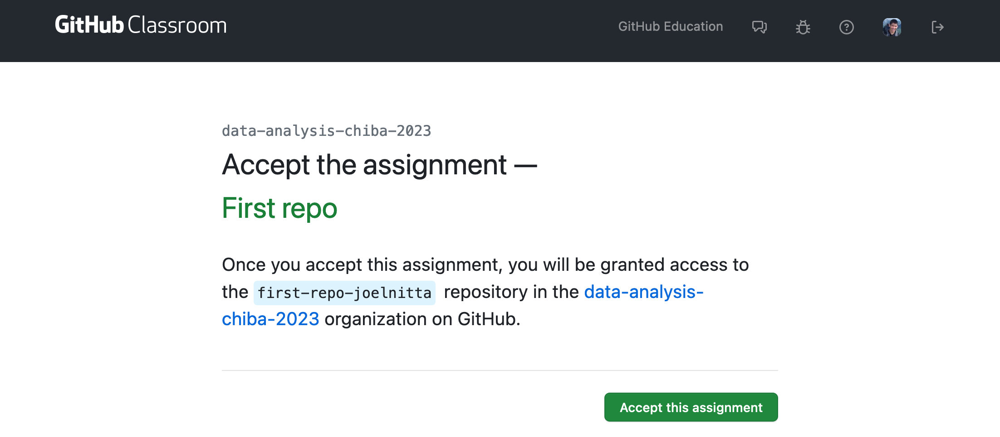
If all goes well, you’ll arrive at the ‘creating repo’ page. This could take a few minutes if the assignment contains a lot of files, but in most cases should be almost instantaneous. So go ahead and refresh your browser.
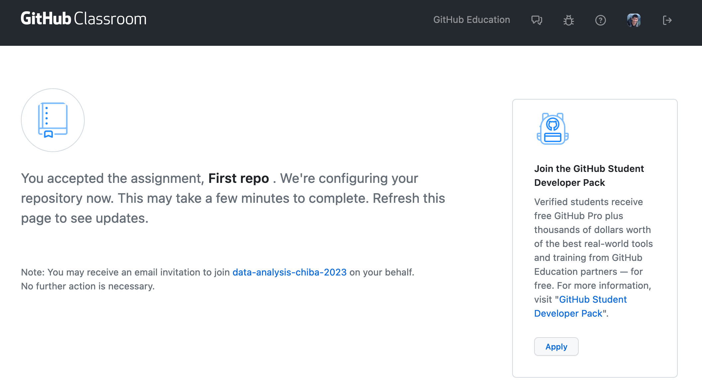
When your repo is ready, you’ll see a page that has a link to it. If there is a due date for an assignment, it will be shown here.
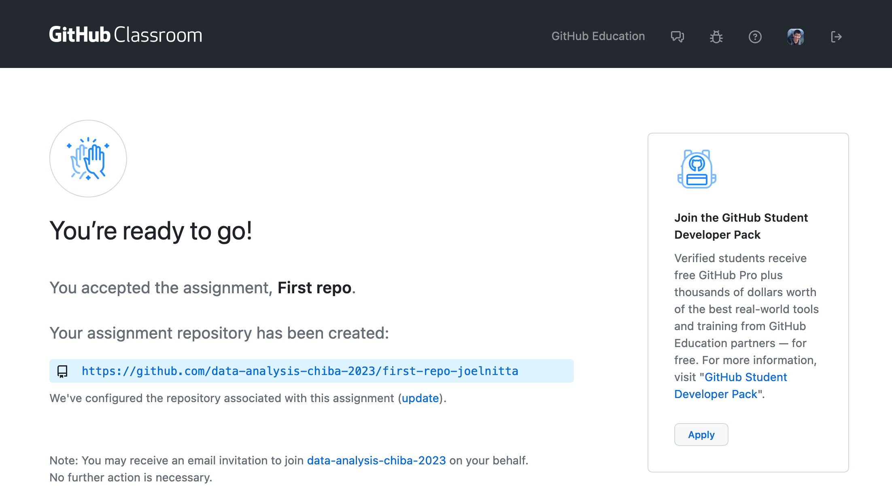 Follow the link. Congratulations! This is the web page of your new repository on Github. Using the GitHub website, you will be able to browse your files directly inside of an internet browser (although so far it is empty since we haven’t added any files). Notice that this repo is labeled ‘Private’. It is only accessible to you, and to the teaching team. No one else can see it.
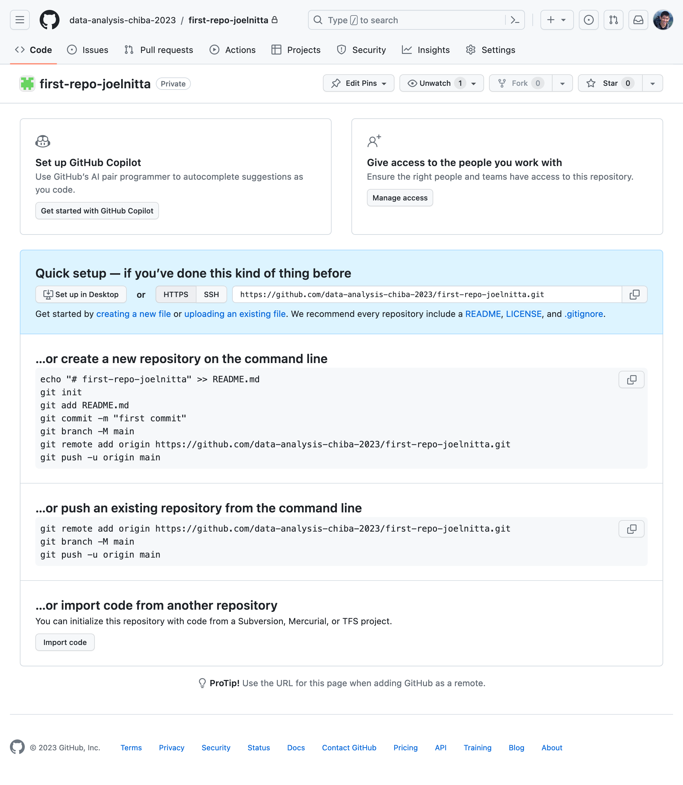
If you cannot create a repository, get help from the instructor.
This step is specific to this course. If instead you would like to create a general new repository (that is not an assignment for this course), simply click the “New repository” button on your home screen when you are logged into GitHub. When you create a new repository in this way, you can choose to make it private to only yourself (with the option to add specific collaborators if you choose), or public to showcase your work to the public.
Clone
Next, we want to clone this repository into your laptop so that you have a local copy of the repository. This is how you can make changes to the repository on your machine.
Make sure you have the latest version of RStudio installed before you start.
Copy the HTTPS (not SSH, since we set up authentication with your PAT) link from your GitHub repository website. It will be something like https://github.com/data-analysis-chiba-2023/first-repo-joelnitta.git See below.
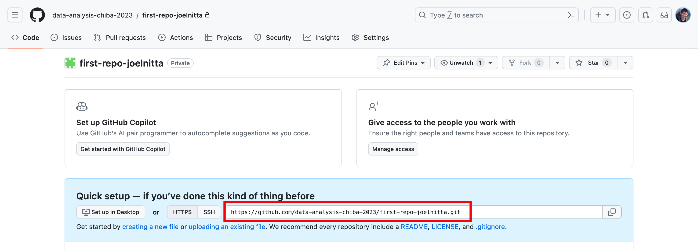
Important Note: Unlike in this example, where we started with an empty repository, for some future assignments, the repository created for you will already contain files. In that case, to find the “repository URL”, locate the green “Code” button on the upper right corner of the file list as shown below. Be sure to select “HTTPS”, since that is how we have set up your authentication method.
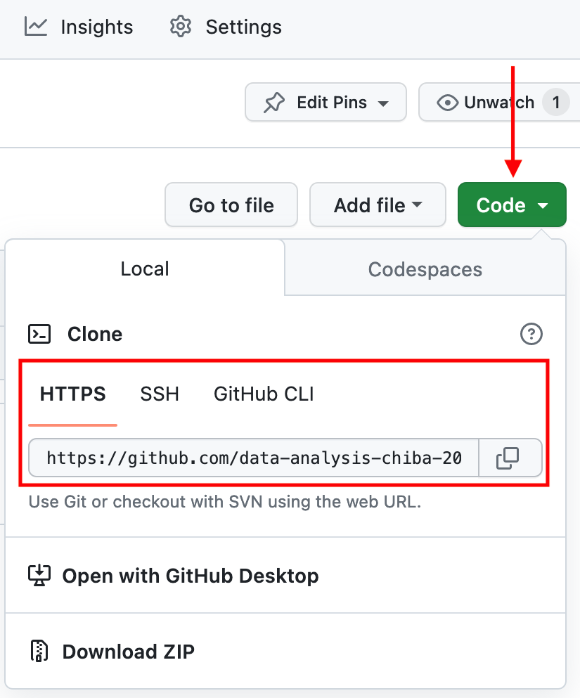
Next, in RStudio, start a new Project:
- File > New Project > Version Control > Git. In the “repository URL” paste the URL of your new GitHub repository.
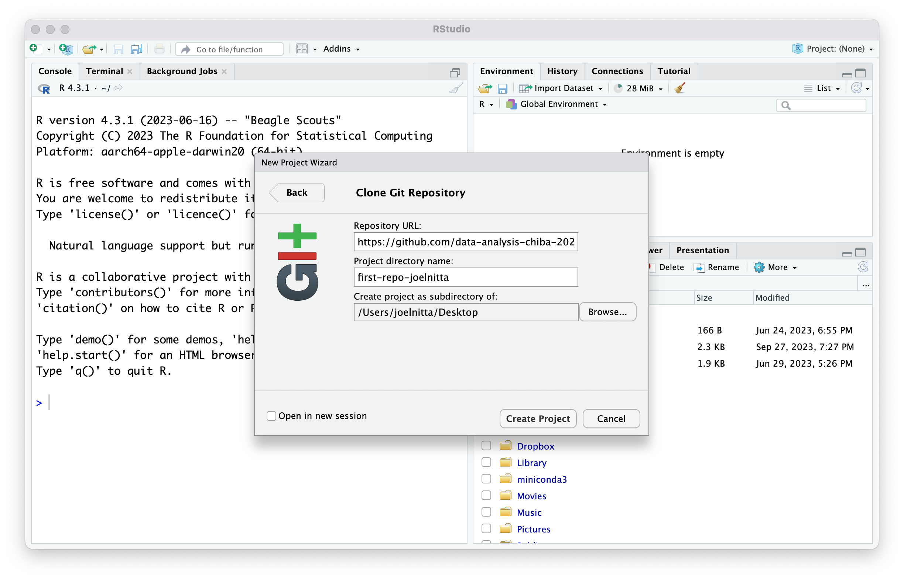
Do you NOT see an option to get the Project from Version Control? Go to chapter 13 of Happy Git and GitHub for the useR for tips on how to help RStudio find Git.
Take charge of – or at least notice! – the local directory for the Project. A common rookie mistake is to have no idea where you are saving files or what your working directory is. Pay attention. Be intentional.
This course will involve creating multiple projects. I recommend creating a folder called “data-analysis-course” on the desktop, and putting each project in there. Then you can easily find them later.
Check “Open in new session” so that RStudio will open your new project in a new window. Click “Create Project”.
Confirm that a new directory has been created with the project directory name you specified. The directory now contains a .Rproj file. This is the RStudio project file. We will subsequently push this file to the remote repository.
Also note that a new RStudio window has been opened for you as a workspace. Notice the “Git” tab in your RStudio window.
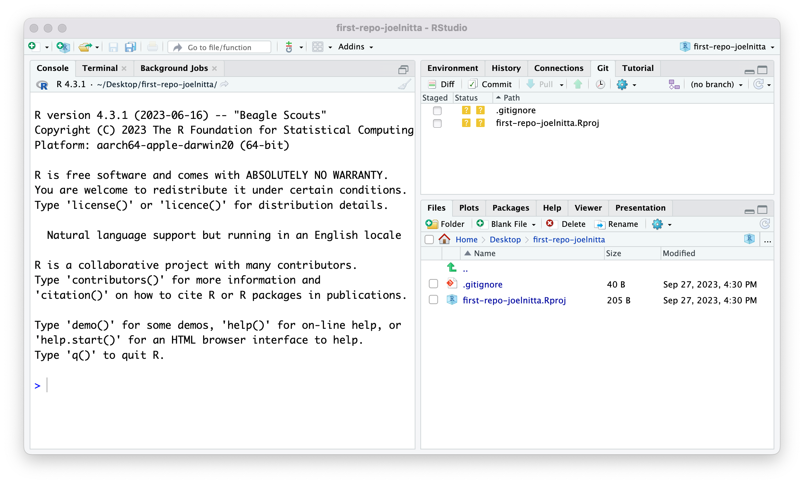
Congratulations, again! You have cloned the Git repository onto your local machine. Well done!
Notice that the project directory current contains nothing except for the automatically generated .Rproj and .gitignore file. Ignore this last file for now, we will talk about it later (ignore .gitignore, ha! It’s okay, you don’t have to laugh). This is not very exciting yet at all. So let’s add something.
The first thing you should add to every directory you create is README.md, and you will soon see why. This is something that integrates very well into the GitHub user interface; GitHub always detects your README files automatically and displays it right on the repository web page, giving information about the repository.
Go ahead and create a new file in your project directory (File->New File->Markdown file). Add the line “This is a line from RStudio”. Save your file to the local repo directory and call it README.md.
Next, we want to publish this change on GitHub so that it becomes a permanent change with a record (and in the future so that your group members or collaborators can access it if it were a shared repo). The process is a little awkward to start with so we’ll take it one step at a time.
Stage
First, we need to stage the change. This is basically “telling” GitHub about this new change. Nothing can be committed without first being staged.
Stage the README.md file by going to the “Git” tab on top right of the RStudio window and check “staged”. Also stage the .Rproj file while you’re at it.
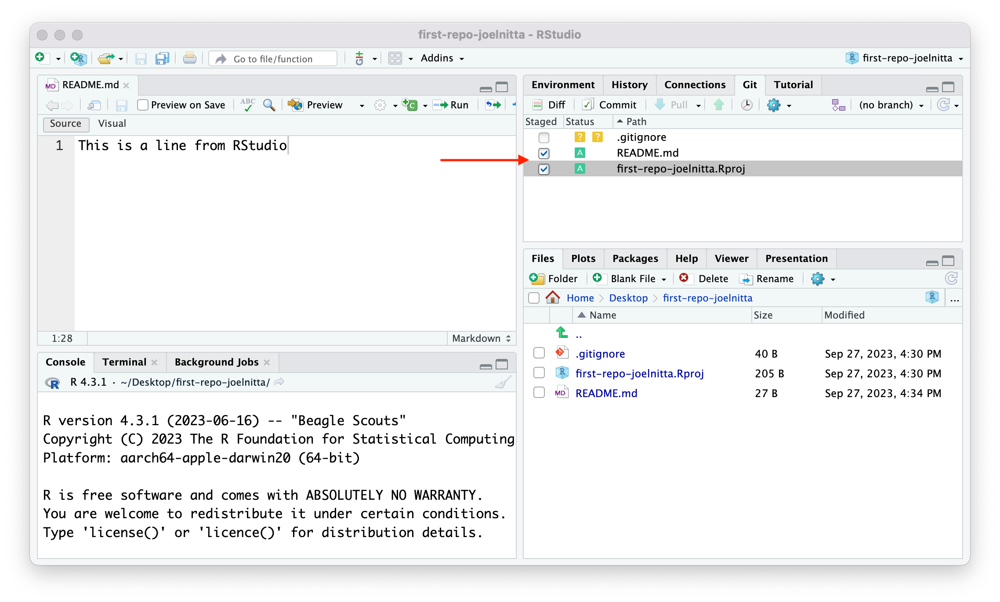
Great, that was easy. Git now knows about these new changes you want to submit.
Note that if you were doing this on the command line, you’d use the git add command to stage files.
Commit
Next, we want to commit these changes. By committing, you effectively create a new record to remember the current state of the directory. This is something you don’t get from only staging the files.
You can commit by clicking Tools > Version Control > Commit (or hit the Commit button in the Git pane). Notice the changes for each file can be viewed in the popup window. Enter a commit message to describe your change. I put “Add README.md and the RStudio project file” for mine. All your staged files will be included in this commit. Click “Commit” and “Close”.
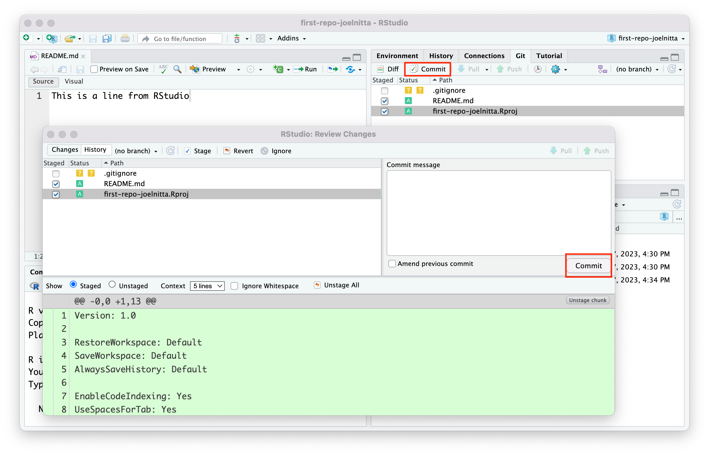
Go to your repository page on GitHub. Notice that the new files are not yet on GitHub. Surprised?
IMPORTANT NOTE!! The changes are NOT on GitHub yet. They have NOT been published. Commit is an operation that happens solely on your local repository. This allows you to create a record of changes while being offline. This also shields you from complications that may arise when merging with the remote repository (until you decide to push). This is something that confuses a lot of beginners. Take a moment to think about this. If in doubt, ask the instructor.
Push
Push is the operation to bring the remote repository hosted on GitHub up to date with your local changes. Normally, you might have accumulated one or more commits in your local repository that you’re ready to publish. All of these commits can be pushed with one “push” operation.
Now we will push the one commit we made with the addition of the README.md and .Rproj files.
Do this by clicking the green ‘Up’ arrow (or Tools->Version Control->Push Branch).
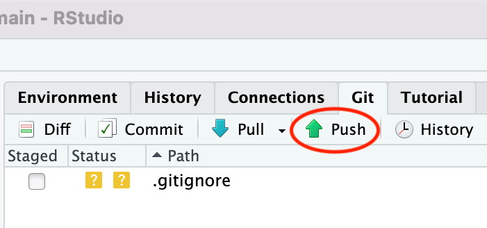
You should see this pop-up in RStudio (with your GitHub username).
>>> git push origin HEAD:refs/heads/main
To github.com:data-analysis-chiba-2023/first-repo-username.git
* [new branch] HEAD -> mainNow, go back to your repository page on GitHub. This is what you should see.
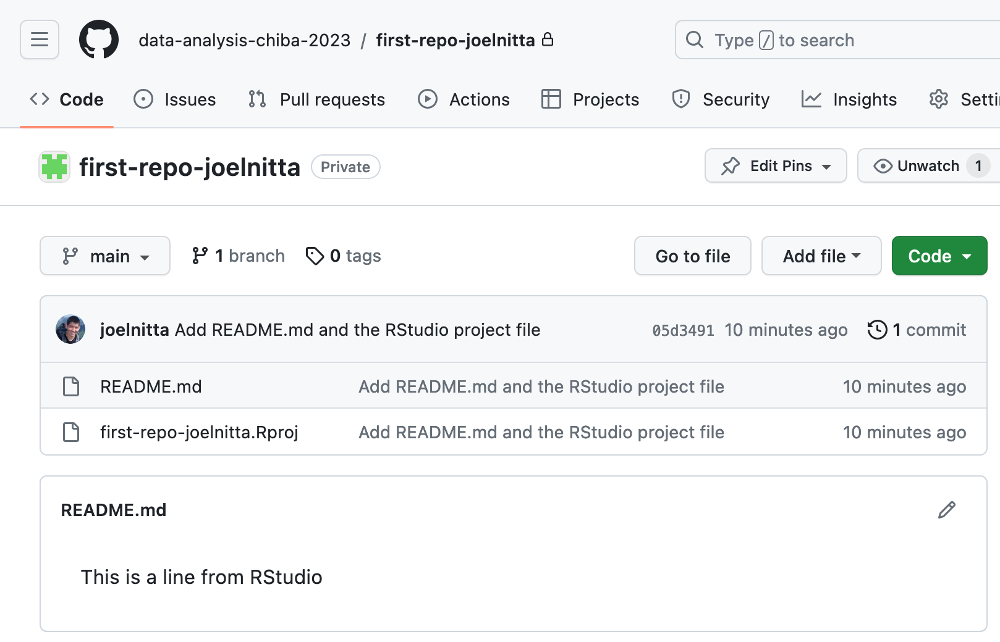
Notice that the content of README.md is displayed directly on the repository’s home page!
Take a moment to browse through GitHub’s user interface. You can navigate through the files and their contents. You can also look at the commit history by clicking on “commit”. In addition, GitHub supports a range of project management features including issues, wiki pages, and contribution statistics. You will inevitably learn more and you gain more experience!
Keep in mind that if someone else wants to clone your repository, an owner (in the case of assignments that is you or a teaching team member) must first add the individual(s) to the collaborators list in order for them to have access. This is because by default the repo is private to only you and the teaching team. You can change this if you wish by going to ‘Settings’ - see below.
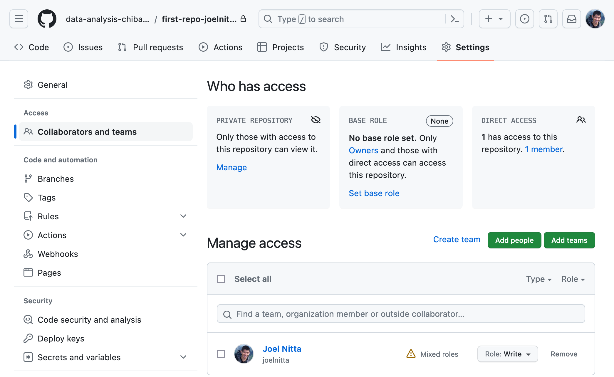
Pull
Finally, we want to demo the pull operation. We will make a change directly on GitHub. Don’t actually do this in practice (see note below). This is just an illustration to show how we could pull in changes to files that were made somewhere else than on your local machine. This simulates the situation where your group member pushes a new change that you don’t currently have. In order to sync up, you’ll perform a “pull” from the remote repository into your local repository.
To make a change directly on GitHub, go to your repository page, click on the file README.md. On top right of the file, there should be a pencil icon.
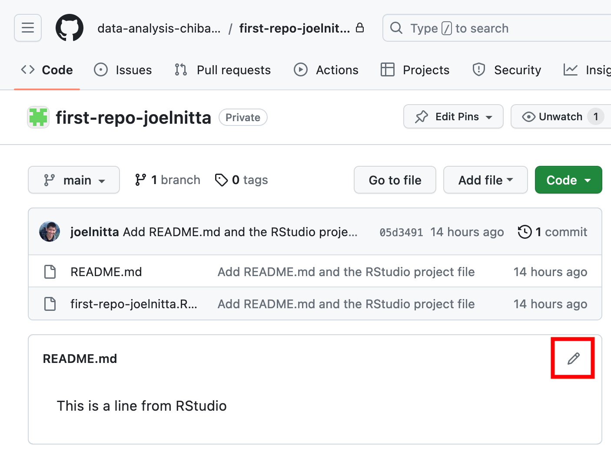
Click on the pencil. Add this line to README.md: “This change was made directly on GitHub.” Put in a commit message and commit directly to the “main” branch. Now you should see this.
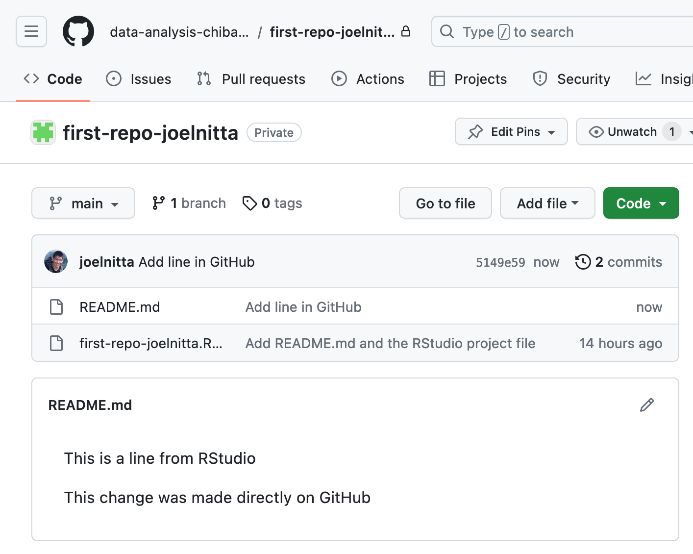
Check that your local version of the file still only contains the single line: “This is a line from RStudio”.
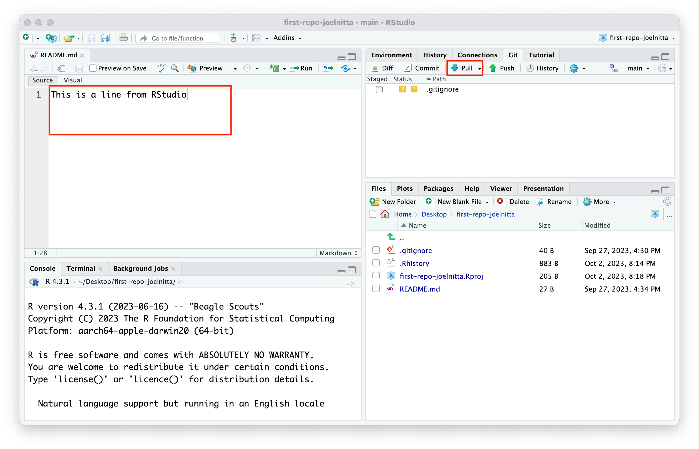
Click the blue down arrow in the Git pane (or click Tools->Version Control->Pull Branches). And….. Voila!
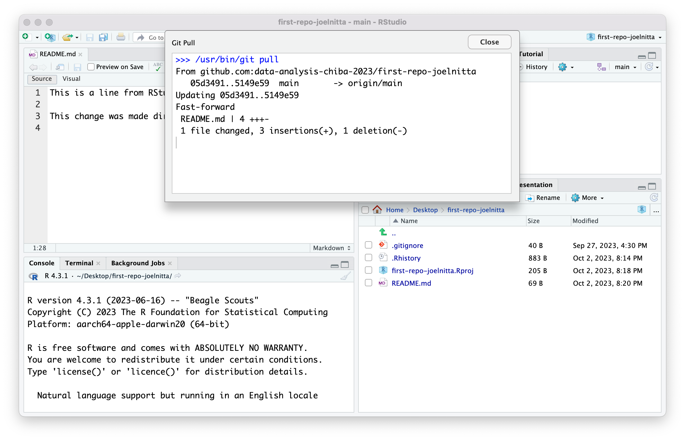
IMPORTANT NOTE - Note that we recommend against making extensive changes directly on GitHub. The browser is an unreliable environment compared to RStudio’s built-in text editor. In addition, this is an easy way to introduce code conflicts in case you have uncommitted changes in your local repository. This was done here only for the sake of demonstration. So don’t actually do this in practice!!
About .gitignore
Oh yeah, that .gitignore file that we have ignored so far.
Go ahead and take a look at the content of this file now. You should see the following:
.Rproj.user
.Rhistory
.RData
.RuserdataThis is basically telling Git to ignore all these files in the list. This may come in handy when you start working on your project. The datasets that you will work with may be >100 MB in size, which exceeds GitHub’s per file limit. You may still want to keep the data files inside your project directory for easy access. In this case, you can add those filenames to this .gitignore file so that Git doesn’t bug you about these “unstaged changes”. Or, you can add all files with a certain extension using a wildcard. For example, if we wanted to make sure we don’t commit data in txt files, we could add the line *.txt to our .gitignore file. GitHub keeps up a set of commonly used .gitignore files as well as more information about their usage here.
Part 4: Homework assignment
We have now worked through the complete cycle of cloning, committing changes, and pushing changes to the remote. For your homework assignment, you will practice this one more time.
First, go to Moodle, click on the Day 2 Homework assignment, and click on the link to accept the assignment. This will create the repo in your GitHub account.
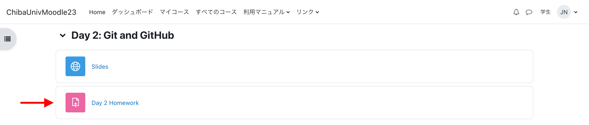
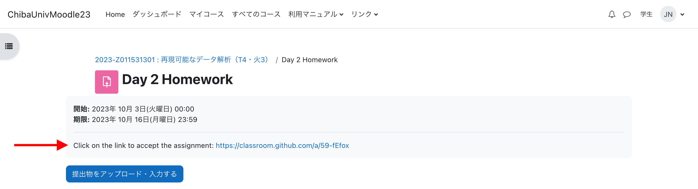
As we did before, clone the remote repo to your local machine. Then, edit the file git_facts.md by deleting the underscores and filling in the blanks with the correct words. Once you have done so, commit your changes and push to the remote.
Be sure to do this BY THE DEADLINE, or your work will not be counted.
I will repeat this part because it’s important: you must both commit the changes locally and push to the remote before the deadline – verify that you can see your changes on GitHub, otherwise your instructor won’t be able to see them either, even if you fill in the blanks correctly. Your grade will be based on the latest commit that occurred before the deadline (this tag is auto-generated). Any commits after the deadline will be ignored (not scored).
You can double check that you’ve successfully submitted (pushed) the homework by visiting your GitHub repo in your browser (use the same link in Moodle that you clicked to accept the assignment). Make sure the homework file there shows the same changes that you made in RStudio.
Additional resources
Here are some resources in case you want to learn more.
Attributions
These materials were modified by Joel H. Nitta from those posted at https://stat540-ubc.github.io/ under the Attribution-NonCommercial 4.0 International license.
This class was originally developed by Eric Chu with materials adapted from Happy Git and GitHub for the useR by Dr. Jenny Bryan. It was later modified extensively by Keegan Korthauer.